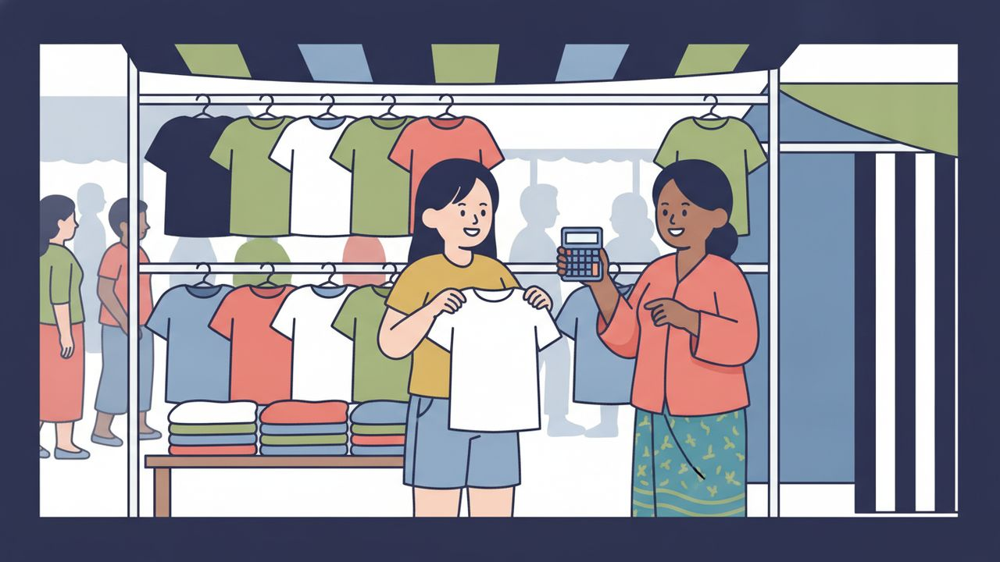

ロールプレイング ⑧
市場でTシャツを買う

場面設定
プノンペンの市場の服屋さん。日本人のお客様（女性）がTシャツを探し、色とサイズを選んで試着し、値段を交渉して買う場面。市場では値段が決まっていないことが多く、交渉が前提になる。スーパーマーケット（ផ្សារទំនើប）では値札どおりなので、この交渉は使わない。
登場人物: お店の人（អ្នកលក់）／お客様（បង、女性を想定）
この教材と同じテーマの聞き流し動画「聞き流しクメール語219単語【レストランと買い物】」は 11月20日 に公開予定です。公開されたら、ここに動画が出ます。
保存されるファイル名: 08_市場でTシャツを買う_v1.0_20261105.pdf
会話
お店の人
ជម្រាបសួរបង។
មើលសិនទៅបង។
お客様
ជម្រាបសួរ។
ខ្ញុំត្រូវការទិញអាវយឺតមួយ។
お店の人
តើបងចង់បានពណ៌បែបណាដែរ?
お客様
សូមពណ៌ខ្មៅ។
ខ្ញុំចង់មើលបន្តិច។
お店の人
ចាស នេះបង។
តើបងពាក់ទំហំអ្វីដែរ?
お客様
ខ្ញុំពាក់ទំហំM។
សុំលអាវតិចបានអត់?
お店の人
បានបង។
お客様
អាវនេះតូចពេក។
តើមានទំហំធំជាងនេះអត់?
お店の人
មានបង ចាំរកអោយ។
お客様
អានេះត្រូវហើយ។
តែលក់តម្លៃប៉ុន្មានបង?
お店の人
ដប់ប្រាំដុល្លារបង។
お客様
ថ្លៃណាស់។
ចុះតិចបានអត់?
ដប់ដុល្លារអីបានហើយ។
お店の人
អត់បានទេបង។
អត់ចំណេញទេ។
お客様
បើដប់ពីរដុល្លារខ្ញុំយកមួយ។
お店の人
បានបង។
ថ្ងៃក្រោយអញ្ជើញមកទៀត។
お客様
ខ្ញុំអោយលុយម្ភៃដុល្លារ។
お店の人
ខ្ញុំអាប់ជូនបងប្រាំបីដុល្លារ។
អរគុណច្រើនបង។
お客様
អរគុណច្រើន។
សូមជួយខ្ចប់អោយបន្តិច។
フリートークにつながる質問
会話のあと、役を離れてこの質問で話を広げてみてください。答えは思いつく範囲で構いません。
質問 1
តើបងធ្លាប់ទិញខោអាវនៅផ្សារទេ?
質問 2
តើបងចូលចិត្តពណ៌អ្វីជាងគេ?
質問 3
មួយសប្ដាហ៍បងទៅផ្សារប៉ុន្មានដង?
扱った単語（57語）
| # | クメール語 | 読み方 | 意味 |
|---|---|---|---|
| 1 | មើល | ムール | 見る |
| 2 | សិន | サン | まず・とりあえず |
| 3 | ទៅ | タウ | 行く |
| 4 | ត្រូវការ | トルーカー | 必要とする |
| 5 | ទិញ | ティン | 買う |
| 6 | អាវយឺត | アーウ・ユート | Tシャツ |
| 7 | ចង់ | チョン | したい |
| 8 | បាន | バーン | できる・手に入れる |
| 9 | ពណ៌ | ポア | 色 |
| 10 | បែបណា | バエプ・ナー | どんな |
| 11 | ដែរ | ダエ | 〜も（ក៏と対で使う）・文末に付けて問いを和らげる |
| 12 | សូម | ソーム | 〜してください（動作をお願いする） |
| 13 | ខ្មៅ | クマウ | 黒い |
| 14 | បន្តិច | ボンティ | 少し |
| 15 | ពាក់ | ペアック | 着る |
| 16 | ទំហំ | トムホム | サイズ |
| 17 | សុំ | ソム | 〜ください（物を求める） |
| 18 | ល | ロー | 試しに着る |
| 19 | អាវ | アーウ | シャツ・上着 |
| 20 | តិច | ティッ | 少し |
| 21 | អត់ | オッ | 〜ない（否定） |
| 22 | តូច | トーチ | 小さい |
| 23 | ពេក | ペーク | 〜すぎる |
| 24 | ធំ | トム | 大きい |
| 25 | ជាង | チアン | 〜より（比べる） |
| 26 | ចាំ | チャム | 待つ |
| 27 | រក | ローク | 探す |
| 28 | អោយ | アオイ | 〜してもらう・〜に |
| 29 | ត្រូវ | トラウ | すべき |
| 30 | ហើយ | ハウイ | もう〜した・そして |
| 31 | តែ | タエ | でも・〜だけ |
| 32 | លក់ | ルオック | 売る |
| 33 | តម្លៃ | ドムライ | 値段 |
| 34 | ប៉ុន្មាន | ポンマーン | いくつ |
| 35 | ថ្លៃ | タライ | 値段・高い |
| 36 | ណាស់ | ナハ | とても |
| 37 | ចុះ | チョホ | 下がる |
| 38 | ចំណេញ | チョムネン | 利益 |
| 39 | បើ | バウ | もし〜なら |
| 40 | យក | ヨーク | 取る |
| 41 | ថ្ងៃក្រោយ | タガイ・クラオイ | 今度・次回 |
| 42 | អញ្ជើញ | オンチューニュ | どうぞ〜なさる（丁寧に勧める） |
| 43 | មក | モーク | 来る |
| 44 | ទៀត | ティエット | もう〜・さらに |
| 45 | លុយ | ルイ | お金 |
| 46 | អាប់ | アップ | おつりを渡す |
| 47 | ជូន | チューン | 差し上げる・お返しする |
| 48 | ច្រើន | チュラウン | たくさんの |
| 49 | ជួយ | チュオイ | 手伝う |
| 50 | ខ្ចប់ | クチョップ | きちんと包む |
| 51 | ធ្លាប់ | トロアップ | 〜したことがある（慣れている） |
| 52 | ខោអាវ | カオアーウ | 服 |
| 53 | ផ្សារ | プサー | 市場 |
| 54 | ចូលចិត្ត | チョールチャット | 好き |
| 55 | ជាងគេ | チアン・ケー | いちばん〜 |
| 56 | សប្ដាហ៍ | サッパダー | 週 |
| 57 | ដង | ドーン | 〜回 |
表現・文法の解説
1ចុះ は「下がる」と「値引きする」
ចុះ（チョホ）はもともと「下がる・降りる」。値段の話では「値引きする」になる。ចុះតិចបានអត់?（少し下げてもらえませんか）、សូមចុះតម្លៃ（安くしてください）。トゥクトゥクから降りるときの ចុះ と同じ語なので、場面で意味を見分ける。
2色の名前には必ず ពណ៌ を前に置く
ពណ៌（ポア）が「色」。黒は ពណ៌ខ្មៅ（ポア・クマウ）、白は ពណ៌ស（ポア・ソー）、赤は ពណ៌ក្រហម（ポア・クロホーム）。ខ្មៅ だけでも通じるが、ពណ៌ を付けるのが普通。
3ជាងនេះ で「これより」
ធំជាងនេះ（これより大きい）、តូចជាងនេះ（これより小さい）。ជាង は比べるときの印で、ជាងគេ にすると「一番」になる（レストランの回を参照）。ពេក（ペーク）は「〜すぎる」で、តូចពេក（小さすぎる）のように使う。
4店員の決まり文句 ថ្ងៃក្រោយអញ្ជើញមកទៀត
「またいらしてください」。ថ្ងៃក្រោយ（タガイ・クラオイ、今度）＋អញ្ជើញ（オンチューニュ、どうぞ〜なさる）＋មកទៀត（また来る）。អញ្ជើញ は丁寧に勧めるときの語で、お店でも家でもよく聞く。
5មើលសិនទៅ は「まずは見ていって」
店に入ったときに店員がよく言う言葉。សិន（サン）が「まず・とりあえず」。買う気がなくても気軽に見ていい、という合図。買わずに出るときは ខ្ញុំគ្រាន់តែមើល（見ているだけです）と言えばよい。
6សុំល…បានអត់? で「試させてもらえますか」
សុំ＋ល（試しに着る）＋対象＋បានអត់? の形。店で服を手に取ったら、この一言で試着させてもらえる。សាកល្បង（試す）という言い方もある。
ほかの学び方・活動
YouTube
動画でクメール語を学ぶ
会話・発音・聞き流しの動画を出しています。この教材と同じテーマの「聞き流し」もここにあります。
公式LINE
レッスンの相談
レッスンに興味を持たれた方は、まず面談をさせていただきます。公式LINEを追加してご連絡ください。